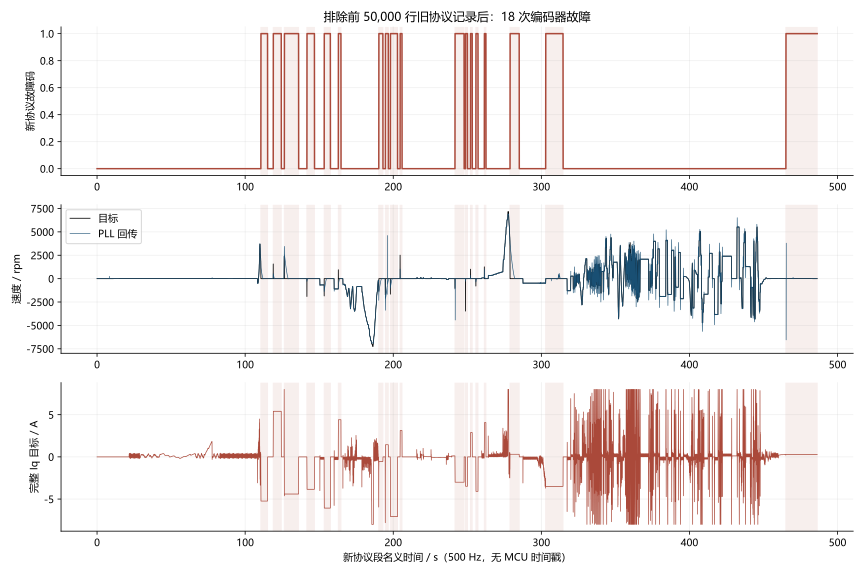
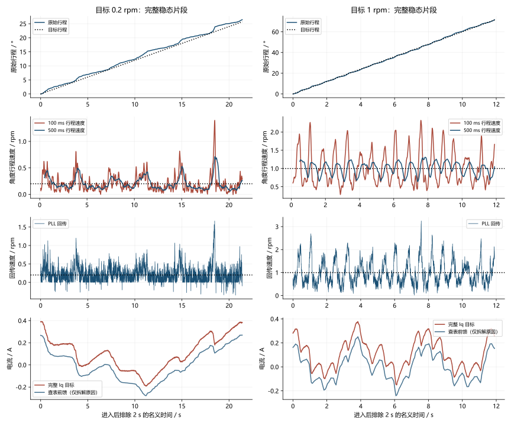
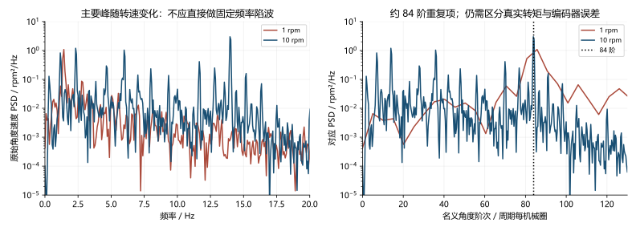
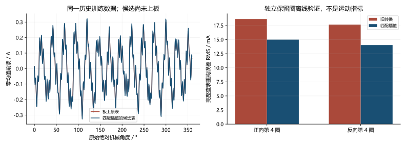

fb60f4e 日志：反复故障与低速顿挫分析
2026-10-03。本页依据原始 CSV、当前源码、板上 Flash 回读、停机 SRAM 诊断和真实 C 模块复现。图由 NumPy / SciPy / Matplotlib 渲染，提供 SVG、PNG 和 PDF；没有把观测器输出当作独立机械测量。
本轮结论：前 50,000 行是一段旧协议的零偏故障记录；后段有 18 次独立编码器故障。0.2 rpm 确实在转，但原始角度进度仍不均匀。已烧录编码器异常增量隔离修复；抗齿槽候选表仅完成离线验证，低速丝滑验收尚未通过。
1. 先把两段协议分开
原文件 D:\Downloads\fb60f4e电机日志.csv 共 293,122 个数据行，保持只读。SHA256：91df5949a0540e6cd4aa249043e34046ed1b963d95507b46294096f4b9f95da8。以下行号从零开始，不含表头。
| 范围 | 实际内容 | 能确定的事实 |
|---|---|---|
| 0～49,999 | 历史 24 通道的前 20 列 | I5 是母线电压；I11=5 为故障状态；I12=9 为零偏故障；I13=5 为命令计数；I17/18 为电流 PI 参数 |
| 50,000～293,121 | 当前固定 20 通道 | I3 为母线，I15 为状态字，I16 为命令计数，I11～14 为零偏均值/噪声 |
旧段始终是同一个锁存的零偏故障，命令计数和结果没有变化，不能算作 50,000 次重新故障。历史源码 ad7a2e9 对应的原始噪声上限为 2 mV；当前上限经用户要求改为 4 mV。旧段没有零偏均值、标准差和四项失败原因，不能由它判断究竟哪一路均值或噪声失败，也不能把后段的 3.15/3.37 mV 填回旧段。
为何导出文件拼接了不同协议尚未确认。VOFA 旧波形保留是一种待核实的解释，文件名和 20 列表头均不能证明全部记录来自 fb60f4e。如果把前段 I15 当作当前状态字，会误读出故障码 0。
CSV 没有 MCU 时间戳、帧序号或人工加载标记。图中的时间按 500 Hz 换算，为名义时间；不能据此精确定位手动施加载荷，更不能用于原生 20 kHz 电流环的频响辨识。
2. 后段的 18 次故障是什么
排除旧段后，共 243,122 帧，名义长度 486.244 s。故障码全部为 1：编码器。没有零偏、ADC 或控制时序故障；ADC 有效标志持续为 1，UART 发送丢帧计数为 0，时序来源及计数为 0。
| 项目 | 后段记录 |
|---|---|
| B / C 零偏均值 | 1.660698 / 1.680863 V |
| B / C 原始采样标准差 | 3.153083 / 3.365612 mV |
| 零偏统计完成 / 失败原因 | 全段完成 / 全段 0 |
| 原始编码器角度为 NaN | 668 帧 |
| 首帧角度为 NaN 的故障事件 | 7 / 18 |
这两路零偏在当前 1.4～1.9 V、4 mV 判据内。新段反复故障不能归因于零偏噪声。角度 NaN 说明读取未被接受，但 CSV 没有首个 SPI 原始帧或 CRC 字段，不能仅凭 NaN 区分 CRC、芯片状态告警和其他读取异常。

图中故障时通道 0～2 是首次故障电流现场，随后持续显示的 Iq 目标不代表功率还在输出。故障后的目标转速自动归零，功率位为 0。图保留完整数据用于展示锁存行为；稳态统计排除故障段。
| 事件 | 首帧数据行 | 故障前目标 rpm | 故障前 Iq 目标 A |
|---|---|---|---|
| 1 | 105304 | 830 | −5.115 |
| 2 | 109480 | 1570 | 5.280 |
| 3 | 113233 | 2380 | −4.523 |
| 4 | 120849 | −1910 | −3.720 |
| 5 | 126683 | −1850 | −6.067 |
| 6 | 131454 | 950 | 4.402 |
| 7 | 145115 | −1350 | −0.666 |
| 8 | 147341 | −1720 | 1.320 |
| 9 | 149025 | −1660 | −6.840 |
| 10 | 152310 | 2510 | 2.880 |
| 11 | 170837 | −1040 | −2.880 |
| 12 | 174391 | −3470 | −3.360 |
| 13 | 176063 | 1010 | 2.640 |
| 14 | 177894 | −790 | −3.840 |
| 15 | 180744 | 1260 | 3.938 |
| 16 | 189424 | 3810 | 0.147 |
| 17 | 201454 | −480 | −3.613 |
| 18 | 282554 | 0 | 0.266 |
最后一次在零速保持时触发，电流目标只有约 0.266 A，不能把所有故障简单归为高速反转冲击。完整事件和首帧字段见 解码结果。
板上首个异常给出了进一步证据
接管串口后先发送并确认 stop，再用 ST-Link 停机读取诊断。板上 Debug 镜像与本地 fb60f4e 构建逐字节相符；Flash 加载的速度参数为 Kp=0.01 A/rpm、Ki=0.2 A/(rpm·s)，不是先前 0.1/2 的高增益版本。
首个异常 SPI 帧为 1E 8C DC DE：状态为 4，CRC 计算值与接收值都为 DE。按 MT6835 Rev1.3 数据手册 的 SPI 帧与状态定义，这是 CRC 正确的编码器欠压告警。故障累计 26,499，停机观察 2 s 未增加；ADC、编码器时序及 UART 错误计数均为 0。证据见 板上诊断。
它证明本次上电至少发生过真实芯片欠压状态报告，不能证明 18 次全部是同一个电气原因。没有芯片 VDD 波形，仍不能确定是供电跌落、接地或连接问题。约 23.2 V 母线、ST-Link 约 3.1 V MCU 供电读数，都不能代替编码器芯片处的 VDD。软件 PLL 或抗齿槽算法无法修复这个告警。
停机只读检查的寄存器为 HYST=7（默认 0.011°）、BW=5（默认基准带宽×32）、NLC=0。未修改寄存器或 EEPROM。寄存器读数。这些设置可能影响小角度测量，现有数据不能把全部顿挫归因于滞回，也没有据此直接提高带宽或关闭滞回。
3. 低速“能转”与“丝滑”分别看什么
所有稳态段统一排除目标进入后的前 2 s，保留该段剩余全部样本。原始角度先跨 360° 展开；净行程给出平均速度。短时速度使用相同的 25 点、三阶 Savitzky–Golay 导数，即约 50 ms 窗口。另用原始角度的 100/500 ms 净进度验证较慢的走走停停。
这些是编码器原始角度的独立计算，与固件 PLL 输出分开；它们仍包含编码器非线性和测量误差，不等同外部高精度机械测速。没有对完整 Iq 目标滤波，也没有减掉前馈后作为验收成绩。
| 目标 rpm | 稳态时长 s | 原始净行程均速 rpm | 原始角度 50 ms 速度 σ rpm | PLL 速度 σ rpm | 完整 Iq 目标 σ A |
|---|---|---|---|---|---|
| +0.2 | 21.402 | 0.20588 | 0.20205 | 0.21479 | 0.14600 |
| +1 | 11.902 | 1.00340 | 0.50356 | 0.51071 | 0.12498 |
| +10 | 23.402 | 9.99152 | 1.02511 | 1.04733 | 0.14898 |
| +2080 | 3.652 | 2080.00840 | 1.25358 | 7.37867 | 0.07190 |
| +2400 | 4.302 | 2400.00421 | 1.42486 | 7.40290 | 0.06315 |
用户观察的平均跟随是有依据的：0.2 rpm 的 21.4 s 段真实角度前进 26.44°。但 500 ms 进度速度的标准差仍是 0.120 rpm，1% / 50% / 99% 分位约 0.076 / 0.157 / 0.668 rpm，相对 0.2 rpm 目标变化很大。100 ms 的对应分位约 0.022 / 0.159 / 0.805 rpm。
因此问题不只是 PLL 曲线看起来不平；较长时间的实际角度进度也不均匀。与此同时，这段只覆盖约 26°，+1 rpm 段只覆盖约 72°，不能从局部角度宣称整圈的抗齿槽补偿好坏。窗口统计另存于 原始角度进度数据。

图中前馈曲线仅用于定位来源：0.2 rpm 段完整 Iq 目标 σ≈0.146 A，旧表查值 σ≈0.142 A，扣除查值后的 PI 余量 σ≈0.013 A。约 0.013 A 不是验收结果；最终电流目标必须计入前馈。方差存在相关项，不能把标准差之比解释成精确的因果占比。
高速段平均速度跟随良好，但完整 Iq 目标标准差 0.063～0.072 A 仍高于 0.02 A，且各段不足 10 s、未重复三次。50 ms 导数会压低高速噪声和较高频运动，不能据其小标准差宣称高速更平稳。本轮没有新的原生 20 kHz 采样或闭环 Bode 数据。
4. 论文与工程代码如何指导下一步
先区分角度周期项与固定频率共振
+1 rpm 片段主要速度峰约 1.43 Hz，+10 rpm 约 13.98 Hz，换算均接近 84 次/机械圈。频率随速度变化，适合继续做角度阶次对照，不能直接当成一个固定 14 Hz 共振。

右图横轴由时域频谱除以目标机械频率换算，未做角度重采样，纵轴仍保留原频率谱密度单位。它提供名义阶次线索，不能单独证明跨圈可重复。这里可能含真实角度相关转矩扰动，也可能含编码器周期误差，不能仅凭该图认定全是齿槽转矩。Ramos Garces 等的 PMSM 频响整定研究 使用辨识后的对象与相干性设计 PI/陷波；本机仍缺足够原生数据，现阶段没有新增陷波。
抗齿槽标定要匹配真实回放，而非只比较表格点
Piccoli、Yim 的研究 支持以位置表征重复的齿槽转矩。ODrive controller.cpp 采用逐位置保持，等待位置误差与速度都足够小，再记录积分转矩。ODrive 官方指南 也要求稳定反馈和可靠角度对应，并指出补偿误差与延迟会影响稳定裕量。
当前表来自历史 ±1 rpm 运动标定：各方向前三圈训练、第四圈独立验证，保留跨圈重复成分并去除 DC。这个方法可能混入运动加速度或测量周期误差；本轮没有把它改写成已实现的 ODrive 静态标定。供电条件明确后，应对同一角度做补偿开/关及逐位置保持对照，确认必要转矩与实际运动同时改善。
发现并修复了一个确定的主机计算缺陷：旧工具先平均角度区间，再用相邻表值平均移半格，削弱了周期成分；固件实际却按两个相邻节点线性插值。现在直接以固件真实的权重 1−f、f 最小二乘求 512 个节点，原有跨圈选择和独立保留圈保持不变。实时查表、Flash 格式和 MCU RAM 都没有增加。
| 独立验证 | 旧转换的实际线性查表重构 RMS | 匹配插值候选 RMS | 降幅 |
|---|---|---|---|
| 正向第 4 圈 | 18.647 mA | 14.990 mA | 19.61% |
| 反向第 4 圈 | 17.635 mA | 14.028 mA | 20.46% |
比较的是同一原始样本上完整插值输出的重构误差，不是表节点误差，也不是闭环电流标准差。候选峰值由 0.307 增至 0.326 A；它并不保证电流更小。候选尚未用于本轮带电运行，不能据上述降幅宣称顿挫改善。

历史源日志 SHA256：411d84b6b1a4ec20327ab52be885d8135c301d0bc4011a686640d12ad690dfed。参见 候选来源、按实际查表验证、候选 512 点表。训练、验证原始 CSV 未修改，原表仍保留在正式固件。
测速与低速反馈保持可验证
ODrive encoder.cpp 的两状态编码器 PLL 提供位置残差校正结构；当前测速只由编码器驱动，不再把电流或目标作为速度预测来源。moteus 控制结构 提供结合位置/速度误差处理低速的工程参考，但增加位置积分会改变带宽与抗饱和，当前没有无证据地叠加另一个积分器。
本轮保持 PLL 带宽、速度 PI、参考权重、120 A/s 限变率和原来的角度谐波修正。下一轮先比较原表/候选表/关闭前馈的原始角度进度，再决定反馈是否需要修改。只调低反馈噪声或只让回传曲线变平，均不足以验收。
5. 本轮具体代码修改与验证
异常角度原本仍可进入 PLL
旧流程在检查角度跳变之前先写入 foc.angle_step。FOC 检查拒绝跳变并关功率，但后续 control_step() 仍能使用这个增量更新 PLL。真实 C 模块注入受保护拒绝的 20° 跳变后，速度由约 0.998 → 662.832 rpm，累计位置没有变化。这是故障瞬间反馈污染，与芯片欠压根因分开。
此前：角度增量 → 写 angle_step → 跳变保护拒绝、停机
└→ 外环仍用异常增量更新 PLL
现在：原始角度 → 有限性 / 增量保护 → 有效增量 → PLL → 速度 PI
└→ 无效标记、停机、跳过 PLL/位置更新
原始绝对角度 → 原表线性查值 → 与 PI 相加 → ±8 A → 120 A/s → 电流环
└→ 统一反算抗饱和
foc.c 在无效或被拒绝的增量上写 NaN，control.c 跳过该样本，状态位 11 同时表示当前原始读数和增量都已通过检查。没有增加嵌入式状态变量或协议字段。修复后同一注入速度保持约 0.998 rpm，位置不跳变，下一个有效样本恢复更新；固定角度、速度正反符号、目标限幅/限变率及 stop 检查通过。未把异常注入代码编入固件。
| 项目 | 本轮结果 |
|---|---|
| Debug / Release 构建、主机语法检查 | 通过 |
| 实际 C 模块故障增量与固定角度复现 | 通过修复后的检查 |
| 正式 Release 烧录及程序回读 | 逐字节一致 |
| 参数/校准区 0x080C0000～0x080FFFFF | 烧录前后逐字节一致 |
| 正式固件中的抗齿槽表 | 保留原表 |
| 候选表 | 离线对照完成，未进行带电验收 |
| 本轮新增旋转测试 | 0 s，未执行 |
| 最终状态 | stop 成功，功率关闭，故障码 0、目标 0 |
最终停机 B/C 标准差 3.195 / 3.382 mV；均值 1.660759 / 1.680948 V；母线约 23.226 V，UART 丢帧、时序计数为 0。烧录复位后故障码变为 0 只说明当时没有新告警，不能证明供电瞬态根因消失。见 停机与回读证据。
正式 BIN：37,996 字节，SHA256 7619e1c611acbf5a3bb6cff21e21d74c6a585527094519ecf085b637e354530c。参数区 SHA256：a5f395d756a0a3c04c7e826ecd699f221641ae04d908fb260d54c974adc4bab3。与候选版本分别列于 固件哈希。
原始采集、Flash 备份、故障 SRAM、C 复现、图表脚本和两份固件保存在 E:\405_FOC\405_FOC\build\bench_debug\20261003_115419；正式固件为 final.bin，candidate_lookup.bin 未用于旋转验收。历史标定源为 build\bench_debug\20261003_030219\baseline_low.csv。
6. 未完成的实机验收
本轮检查、修改、烧录及归档截至 12:46:42，总计 52.4 分钟，新增功率开启的旋转测试为 0 秒。
本轮使用 f405-bench-debug 技能，其故障处理要求是：“故障原因尚未消失时保留停机状态。” 当前已确认首个异常为 CRC 正确的欠压，芯片供电瞬态原因尚未确认，因此没有继续清错启动。仅重新上电和短暂停机无告警不能替代启停供电条件的核查。
供电原因明确后，下一轮在 2 A 边界内，依次测试原表、候选表和关闭前馈，覆盖 ±0.2/±1/±5/±10 rpm 的相同绝对角度范围；整圈记录净行程、100/500 ms 进度、停滞区间和完整 Iq。必要时以 ODrive 逐位置保持方法重采，独立保留圈验证后再比较闭环运动。随后再做启停、正反转与高速恒速，出现新的欠压立即保留首异常并停机。
本轮不宣称低速顿挫已解决，不宣称达到总 Iq σ≤0.02 A，也没有新的闭环 Bode、声压、机械振动或温升验收结果。上一轮报告 保留其当轮范围；本页补充用户新日志与这次最小修复。